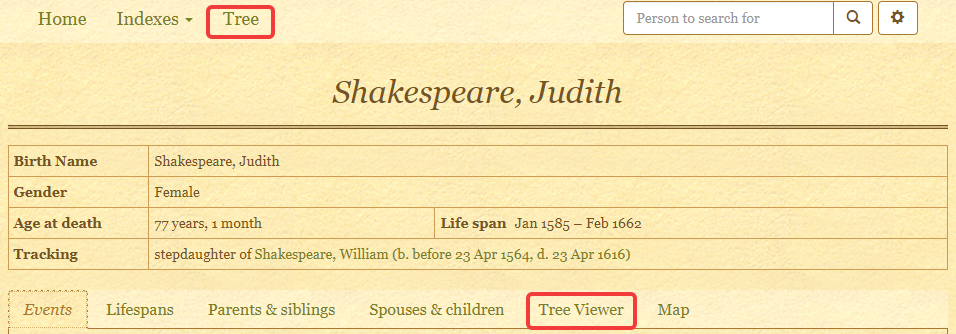
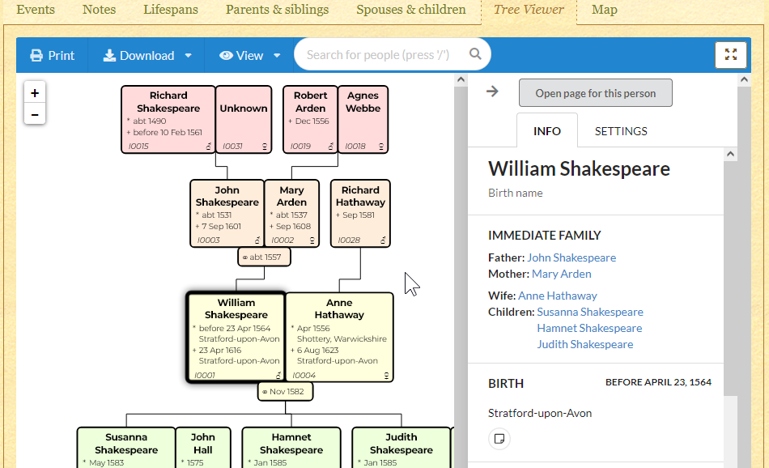

10 Tree Viewer¶
DWE provides an interactive graphical Tree Viewer for exploring relationships within the family tree. It uses a version of the Topola Genealogy Viewer that is bundled with DWE.
Topola is the tool already used by Gramps to generate the interactive family tree available from the main Gramps menu under Tools → Analysis and Exploration → Interactive Family Tree. Tree Viewer makes that view available to a DWE website visitor.
10.1 Tree and Tree Viewer¶
DWE provides two different interactive tree displays:
-
Tree is the family-tree display inherited from the original Dynamic Web Report. It provides extensive configuration options for controlling the content and appearance of the tree. Tree can be opened from the top-level menu bar on any report page.
-
Tree Viewer is the additional DWE display based on Topola. It provides a different way of exploring the family tree, allowing you to navigate through the chart and select people directly from the graphical display. Tree Viewer can be opened by selecting the Tree Viewer tab on a person’s page.
The two displays are independent. Tree is the familiar Dynamic Web Report tree, while Tree Viewer provides another way of navigating and exploring the genealogy data.

Figure 18 Person page showing Tree and Tree Viewer controls
10.2 Setup¶
Tree Viewer is set up by the DWE website creator. When creating the DWE report, the creator will select the option to include Tree Viewer on the website. See Include Tree Viewer in Chapter 21 of this guide.
10.3 Using the Tree Viewer¶
When Tree Viewer is opened, the tree is initially centred on the person whose DWE page you are viewing. That person is highlighted within the tree. A side panel on the right shows details about that person.

Figure 19- Tree Viewer
The Tree Viewer display and controls are very similar to the Gramps Interactive Family Tree display. You can pan and zoom the display and select people in the tree to explore their family relationships. You can collapse the side panel by selecting the → arrow icon at the top of the side panel. Click the icon again to redisplay the panel.
If you select another person in the display, the tree is reorganised and the new person is highlighted. You can also click on a name in the side panel to move to a new person.
As you move around the tree the side panel details change to match the person highlighted in the tree, but you are still within the original person’s DWE page. The side panel contains an Open page for this person button. Selecting the button opens the highlighted person’s DWE page.
The tree is initially displayed within the Tree Viewer section. To give the tree more space, select the Maximize icon at the top right of the Tree Viewer. The viewer expands to fill the browser window, and the button changes to Restore. Select Restore to return to the normal display.
10.4 Tree Viewer controls¶
The toolbar across the top of the Tree Viewer provides the standard Topola controls:
-
Print — opens the browser's print facility for printing the displayed family tree.
-
Download — saves the displayed tree as a PDF, PNG or SVG file. The files are named DWEtree.pdf, DWEtree.png and DWEtree.svg, and are normally saved in the browser’s Downloads folder.
-
View — selects the way the family tree is displayed. The available views are described below.
-
Search — searches for a person in the tree. Partial names can be used. Selecting a person from the search results changes the focus of the tree to that person.
-
+ and − — zoom in and out.
You can also drag the tree to move around the display.
10.5 Choosing the tree view¶
Select View to change the way the family tree is displayed. Four views are available:
-
Hourglass chart — displays ancestors and descendants around the selected person. This is the normal Tree Viewer display.
-
All relatives — displays a wider range of people related to the selected person.
-
Donatso family chart — provides an alternative graphical arrangement of the family.
-
Family tree (experimental) — displays people graphically on a drawing of a tree. This view is most practical when displaying a relatively small number of people.
The selected view is not remembered when you leave the Tree Viewer. When you open the Tree Viewer again, it starts with the Hourglass chart.
10.6 Tree Viewer data¶
When Tree Viewer is enabled Tree Viewer and the data it requires are automatically created. A website visitor does not need to install Topola, visit the Topola website, or provide a separate GEDCOM file
-
DWE generates a GEDCOM file containing the genealogical data required by the viewer.
-
DWE removes the Gramps researcher copyright information from the GEDCOM.
-
That file and a bundled Topola viewer with its supporting files are placed in the generated website.
The GEDCOM file generated for the Tree Viewer respects the Person filter selected when creating the DWE report, including custom filters. Individuals excluded by the filter are not exported to the GEDCOM, and relationships that depend on those individuals may therefore be absent from the tree.
For example, if a filter excludes a person's ancestors, their siblings may still appear in the Tree Viewer but may not be connected through their excluded parents.
10.7 About...¶
The website creator can provide an optional note containing information about the Tree Viewer. When a Tree Viewer note has been selected in DWE Options, it is displayed under About... in the Tree Viewer section. If no note has been selected, the About section is not shown.